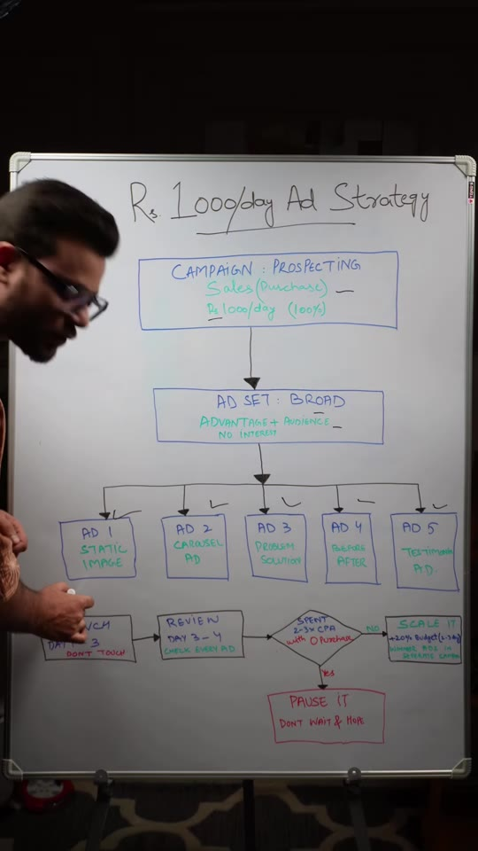
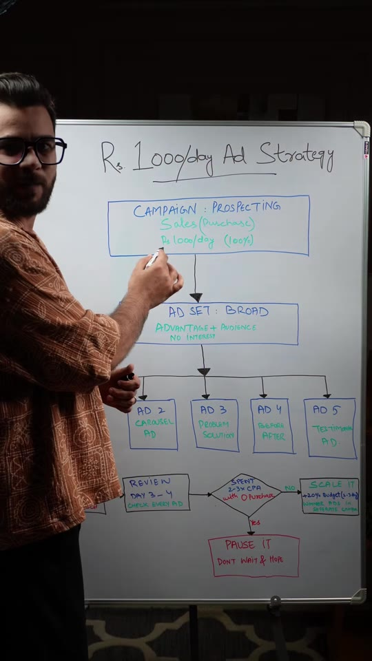
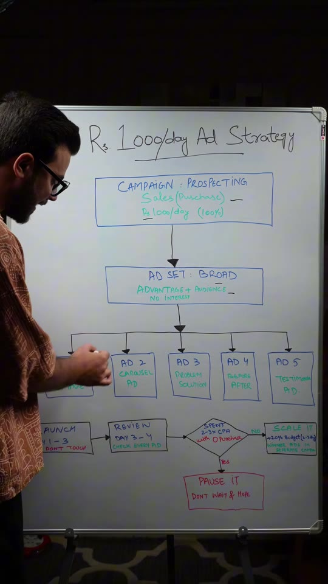
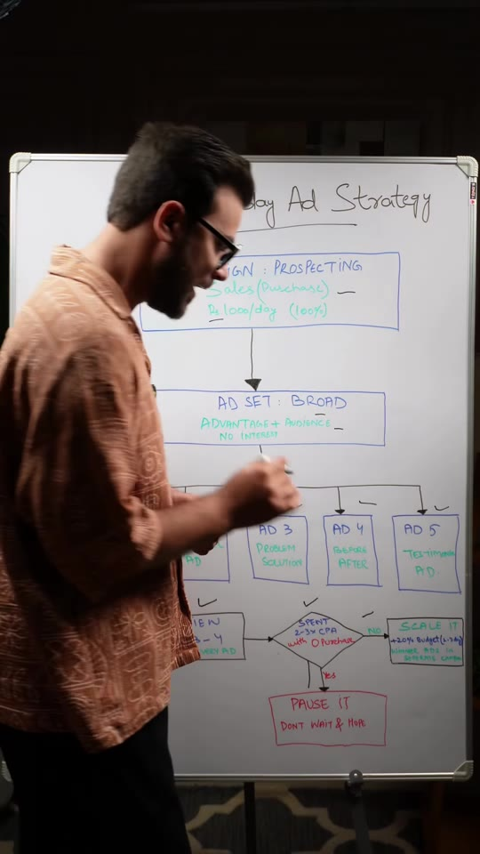

Meta-Ads · Creative-Testing
The ₹1,000/Day Meta Ads Creative Testing Playbook: 5 Angles, Decision Logic & Scaling Rules
A clean whiteboard framework for systematic, low-risk Meta Ads creative testing on a ₹1,000/day budget. Outlines a single broad-audience prospecting campaign containing 5 distinct creative format variations (Static, Carousel, Problem/Solution UGC, Before/After, Testimonial), an enforced 72-hour algorithmic stabilization window, an objective CPA threshold to immediately kill losers, and a graduated 20% budget scaling mechanism for identified winners.

Steps / Workflow
- Campaign Architecture (Prospecting):
- Objective: Sales (optimizing for the Purchase conversion event).
- Budget: Allocate 100% of the testing budget (₹1,000/day) to a single testing campaign.
- Ad Set Setup (Broad / Zero Interests):
- Use Advantage+ Audience with no interest, behavior, or demographic exclusions.
- Let creative assets do the audience targeting rather than pre-restricting the algorithm.
- Deploy 5 Distinct Creative Format Angles: Within the single ad set, launch exactly 5 distinct creative variations:
- Ad 1 — Static Image: High-impact visual showing product in use or clear offer callout.
- Ad 2 — Carousel Ad: Multi-card sequence highlighting different SKUs, features, or benefits.
- Ad 3 — Problem / Solution (UGC Video): User-generated content opening with a direct customer pain point.
- Ad 4 — Before / After: Visual transformation demonstrating measurable outcome.
- Ad 5 — Testimonial Ad: Customer review screenshot or video proof addressing objections.
- Algorithmic Stabilization (Days 1 to 3):
- Rule: Do not touch, tweak, or prematurely kill any ad for the first 72 hours. Allow Meta's delivery system to exit initial volatility and distribute impressions across the creative pool.
- Performance Review & Decision Logic (Days 3 to 4):
- Inspect spend and conversion metrics for each of the 5 ads against target Cost Per Acquisition (CPA).
- Kill Rule: If an ad has spent 2× to 3× target CPA with 0 purchases → PAUSE IT IMMEDIATELY. Never “wait and hope”.
- Scale Rule: If an ad generates purchases at or below target CPA → SCALE IT by increasing budget by 20% every 2 to 3 days.
- Graduation: Move proven winning creatives into a dedicated, separate scaling campaign to isolate stable winners from ongoing testing volatility.
Framework Walkthrough



Pause it. No -> Scale it by 20% budget every 2-3 days">Verbatim Breakdown
| Timestamp | Screen / Source | Verbatim Content |
|---|---|---|
00:00 |
Whiteboard title | Rs 1000/day Ad Strategy |
00:02 |
Whiteboard box | CAMPAIGN: PROSPECTING Sales (Purchase) Rs 1,000/day (100%) |
00:13 |
Whiteboard box | AD SET: BROAD Advantage+ Audience No Interest |
00:22 |
Whiteboard columns | AD 1: STATIC IMAGE AD 2: CAROUSEL AD AD 3: UGC VIDEO (PROBLEM / SOLUTION) AD 4: BEFORE / AFTER AD 5: TESTIMONIAL AD |
00:43 |
Whiteboard box | LAUNCH • DAY 1 – 3 Don’t Touch |
00:48 |
Whiteboard box | REVIEW • DAY 3 – 4 Check every ad |
00:54 |
Whiteboard decision diamond | Spent 2-3x CPA with 0 Purchase? [YES] → PAUSE IT • Don’t wait & pray [NO] → SCALE IT • +20% budget / 2-3 days • Winner ads in separate campaign |
00:59 |
Spoken (audio) | “Jis ad ka spend uske CPA se 2 to 3x times zyada hoga, usko hum tabhi pause karenge. Hum wait nahi karenge na hi hum hope karenge.” |
01:10 |
Spoken (audio) | “20% budget har 2 se 3 din mein badhayenge aur yaad rakhna scale unhi ads ko karna hai jo winners honge aur ek alag naye campaign mein.” |
(caption) |
Post Caption | Comment “META” and I will DM you the guide. Follow for more @thed2cguy (Meta Ads, Facebook Ads, Facebook Ad Tips, Meta Ad Campaign, Instagram Ads) |
Tools & Parameters
- Meta Ads Manager: Single ABO/CBO testing structure with Purchase conversion goal.
- Advantage+ Audience: Meta's AI delivery system allowed to navigate full population without manual detailed targeting overlays.
- Target CPA Metric: Break-even CPA = AOV − COGS − Shipping − Fulfillment fee. Used as the benchmark for the 2–3× kill rule.
Try This
- Calculate your product's maximum allowable CPA (e.g. if AOV is ₹1,500 and margins allow ₹500 CPA).
- Prepare 5 distinct creative formats for your flagship product (1 static, 1 carousel, 1 problem-solution UGC, 1 before-after, 1 customer testimonial).
- Create 1 Broad prospecting campaign at ₹1,000/day and place all 5 ads inside a single ad set.
- Let it run for 72 hours without making any budget or creative edits.
- On Day 4, review spend: if an ad spent >₹1,000–1,500 with 0 sales, kill it. If an ad delivers sales at ≤₹500 CPA, scale its budget or export post ID into your core scaling campaign.
Open Questions
- Creative cannibalization within a single ad set: When 5 ads are placed in one ad set, Meta frequently allocates 70%+ of the daily budget to 1 or 2 ads based on early click-through signals, leaving the other 3 under-delivered. If certain formats receive <₹100 spend, testing each format in dedicated ad sets with minimum spend limits can ensure statistical validity.